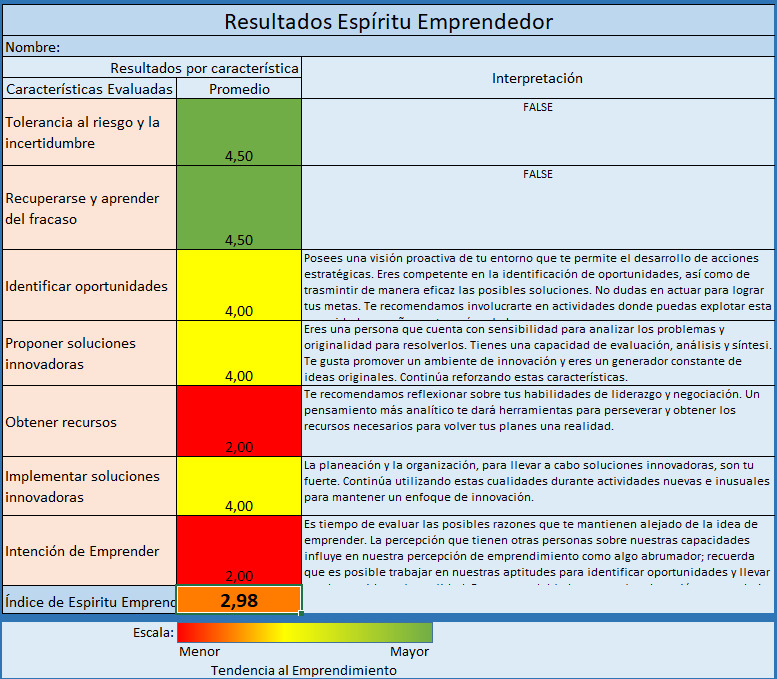
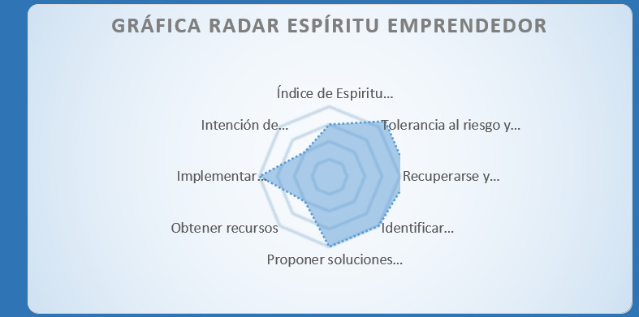
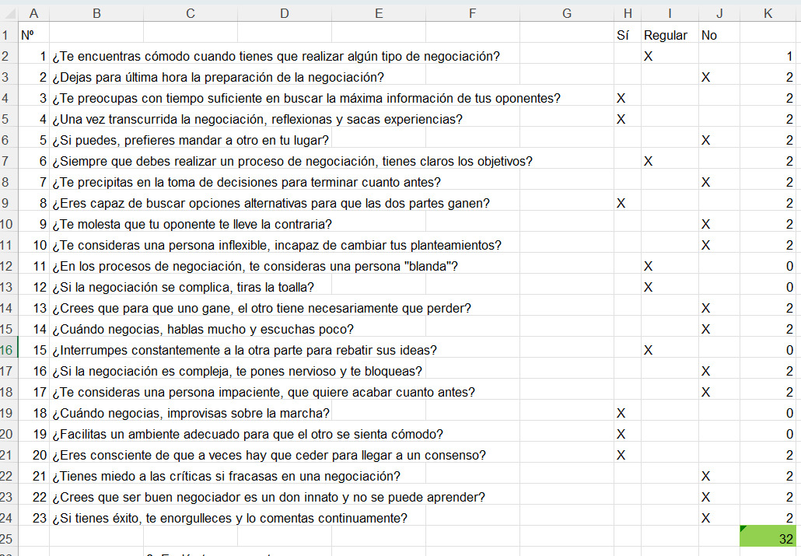

3.1 — Test de autoevaluación: Tu identidad innovadora
¿En qué destaco? ¿Cuáles son tus principales habilidades y capacidades?
La curiosidad constante, la palabra evolución mola. Técnicamente: programación POO, NODE, python, programación web, docker-compose, frontend, backend. Básicamente puedo crear una herramienta web con backend y frontend de principio a fin y subirla a internet. Conocimientos de delineación y 3D, GIS, multimedia, realidad virtual, aumentada, escultura digital, dibujo a grafito y anatomía humana para el dibujo y escultura.
¿Qué tareas y funciones llevas a cabo con eficacia y eficiencia? Resolver problemas.
¿Cuáles son tus principales puntos fuertes? Me gusta ver el cambio o la incertidumbre como una sorpresa u oportunidad para aprender/mejorar.
¿Qué me gusta? ¿Cuáles son tus pasiones? Aprender, disfrutar cada día de la vida y de las pequeñas cosas. Deporte, tiempo con mis padres, mi hijo y mis amigos íntimos, teorizar sobre cualquier cosa.
¿Qué te gusta hacer? Aprender, disfrutar cada día de la vida y de las pequeñas cosas. Deporte. Me gustaría juntar el mundo virtual/digital con el mundo real.
¿Qué te impulsa tanto en tu vida personal como profesional? Poder ser una buena persona y dar ejemplo a mi hijo. La curiosidad.
Mis recursos. ¿De qué recursos dispones? Creo que la formación hoy en día es tu motivación, con las herramientas digitales e inteligencia artificial, aprender solo depende de nosotros. Si hay alguna habilidad que necesitamos para resolver algo en el mundo digital se puede contactar con alguien con esas habilidades o aprenderlas tu mismo, dentro de unos límites.
Mis valores. ¿Cuáles son tus principios rectores y éticos? No juzgues mientras lo que haga la gente no dañe. Trata a la gente como te gusta que te traten. Respeta a los seres vivos y el entorno. Ser amable es gratis.
¿Cómo actúas como ser humano? Intento no juzgar y reflexionar sobre todo lo que ocurre a mi alrededor utilizando el método científico/pensamiento crítico. Me gusta entender los puntos de vista contrarios a los míos, creo que es lo mejor para aprender y avanzar. La palabra evolución mola. Creo que la gente tiene que responsabilizarse de sus actos.
Mis retos. Mi reto es ser feliz y no hacer daño a nadie o dañar al ecosistema lo mínimo posible. En cuanto a proyectos de emprendimiento, me gustaría juntar el mundo virtual/digital con el mundo real. Trabajar en un proyecto similar a Destination Earth o en aportar para que la democracia participativa sea una realidad con herramientas digitales.
Después de verbalizar mis retos, creo que me doy cuenta que esto solo se pueden aplicar al primer mundo, voy a poner primero el proyecto de "profesor/sensei digital". ¿Utopía?
¿Cuáles son tus limitaciones? Creo que mi mayor debilidad es mi dispersión de las ideas/conocimientos en cuanto al emprendimiento. Pero por otro punto eso es lo que me ha llevado a tener diferentes habilidades y ahora puedo juntarlas todas. Mi desastroso conocimiento del inglés es la barrera más grande que tengo.
↑ Volver al índice3.2 — Identificando nuevas oportunidades
Mapa de contexto:
1. Tendencias Tecnológicas
Convergencia GeoBIM: La fusión de datos del territorio (GIS) con modelos de edificación detallados (BIM).
Motores de Videojuegos en Industria: Uso de Unreal Engine o Unity (o Blender) para visualizar datos GIS masivos con calidad fotorrealista en tiempo real.
Gemelos Digitales (Digital Twins): Réplicas virtuales vivas de ciudades o entornos naturales que se alimentan de datos en tiempo real (IoT) para simulación y predicción.
XR (Realidad Extendida): Uso de AR/VR para visualizar infraestructuras subterráneas o proyectos futuros "in situ" antes de construir.
3D en la web: Avanzar en las herramientas de visualización 3D en la web.
2. Normas y Regulaciones
Estándares de Interoperabilidad: Auge de formatos abiertos como IFC (BIM), CityGML, OGC, glTF 2.0 (GIS), OBJ 3D.
Servidores: Servidores de tiles 3D cartográficos y BIM.
Nuevos estándares: Representar nubes, viento, tormentas, huracanes, volcanes en erupción.
Normativas de Smart Cities: Leyes europeas y locales que exigen digitalización en la gestión urbanística y eficiencia energética.
Open Data: Obligación de las administraciones de liberar datos cartográficos y catastrales para su reutilización. Esto sí que es lo más importante: los datos abiertos permiten a cualquiera sin recursos crear.
3. Economía y Medioambiente
Fondos Next Generation Destination Earth: Lo veo utópico pero soñar no vale dinero.
Sostenibilidad y Resiliencia: Necesidad económica de prever desastres (inundaciones, incendios) mediante simulaciones 3D precisas.
Eficiencia de Costes: El uso de Gemelos Digitales reduce errores en obra y costes de mantenimiento operativo.
4. Competencia
Los Gigantes Cerrados: ESRI (ArcGIS) y Autodesk (Revit) dominan el mercado pero son ecosistemas caros y a menudo cerrados.
La Brecha de Visualización: Las herramientas GIS tradicionales (como QGIS) son muy potentes analíticamente pero limitadas visualmente en 3D.
Open Source: Proyectos como Blender o QGIS son herramientas tan profesionales como el software con licencia privada. Creo que tendría que ser un trabajo conjunto con estos dos softwares.
5. Tendencias Demográficas
Urbanización Masiva: Cada vez más población vive en ciudades, lo que obliga a los gestores a usar tecnología 3D para planificar el espacio limitado.
Relevo Generacional Técnico: Los nuevos arquitectos, ingenieros y urbanistas son nativos digitales que demandan herramientas visuales e interactivas.
Ciudadano Participativo: La gente quiere ver cómo quedará una obra en su barrio a través de su móvil (AR) antes de aprobarla.
6. Necesidades e Incertidumbres del Cliente (Dolores)
"Silos" de Información: "Tengo los datos en GIS y el edificio en BIM, pero no puedo verlos juntos sin perder información".
Complejidad Técnica: "Necesito saber programar para automatizar esto, y no sé".
Comunicación Deficiente: "No logro convencer al alcalde/inversor con un mapa plano; necesito que 'caminen' por el proyecto virtualmente".
Coste de Licencias: Las PyMEs no pueden pagar las licencias de software propietario de gama alta para hacer simulaciones. Al final siempre es el dinero.
↑ Volver al índice3.3 — Generación y Priorización de Ideas
En sí, la idea es un gemelo digital de cualquier entorno, pero mejor dividir los problemas para empezar.
Lluvia de Ideas:
Creador de modelo 3D/BIM/GIS: Herramienta para crear elementos 3D a través de imágenes de móviles, datos/imágenes/lidar terrestre, aeroportados, satélites.
El Conector GeoBIM: Un plugin (desarrollado en Python/C++) que conecta QGIS directamente con Blender o software BIM, permitiendo exportar datos GIS complejos a visualizaciones 3D.
Plataforma web 3D de los entornos reales: Predicciones en tiempo real para ayuntamientos, usuarios etc. Añadir interiores de edificios a los interesados, museos, tiendas, etc.
Estándares XR: Nuevos estándares para elementos 3D y meteorológicos, fijos, efímeros, etc.
Priorización de ideas — LA GANADORA:
Idea: Creador de modelo 3D/BIM/GIS (Multi-fuente).
¿Por qué esta? Es la herramienta que más gente podrá utilizar (democratización del dato 3D), no solo expertos. Datos Abiertos: con la conformidad de los usuarios los datos serán open source y todo el mundo podrá usarlos.
Modelo de negocio:
1. Segmentos de Clientes. Usuarios Comerciales (Pagan): Arquitectos, Inmobiliarias, Constructoras y Topógrafos. Usuarios Colaborativos (Gratis): Estudiantes, ONGs, Universidades y aficionados. Socios de Datos: Gobiernos y Big Tech interesados en el dataset global.
2. Propuesta de Valor. Para el Profesional: Herramienta de escaneado 3D de bajo coste con licencia de explotación comercial. Para el Usuario Gratuito: Acceso a tecnología punta de escaneado 3D a cambio de contribuir al conocimiento libre ("Escanea gratis, comparte con el mundo"). Para la Humanidad: Crear el mayor repositorio Open Source de Gemelos Digitales del mundo real.
5. Fuentes de Ingresos. Licencia Comercial: Pago mensual/anual para uso profesional. "Pago en Especie" (Datos): Los usuarios gratuitos "pagan" cediendo sus imágenes al dominio público. Subvenciones/Sponsorship: Financiación por gobiernos o programas de Open Data.



↑ Volver al índice